Week 12: Open Source Part 1
(July 3 - July 10) Introduction to Open Source Software
When we were told we had to find an open source project to contribute
to I had a few candidates in mind, I'm a fan of open source software,
but until now only as a user, I remember using Audacity for mixing
music tracks together for a Mother's day presentation in middle
school, using GIMP and Krita as free Photoshop alternatives with mixed
success, the LibreOffice suite, Blender for 3d modeling and rendering,
the list goes on and on.
But all the open source software mentioned is pretty mature and is
unlikely to have any low hanging fruit for someone new to the project.
I instead looked at another project that I use pretty often: Lemuroid
is an Android app for playing retro games, all the way from the NES to
the Nintendo 64, being that I've used it for a while I had noticed
some issues with the spanish translation.
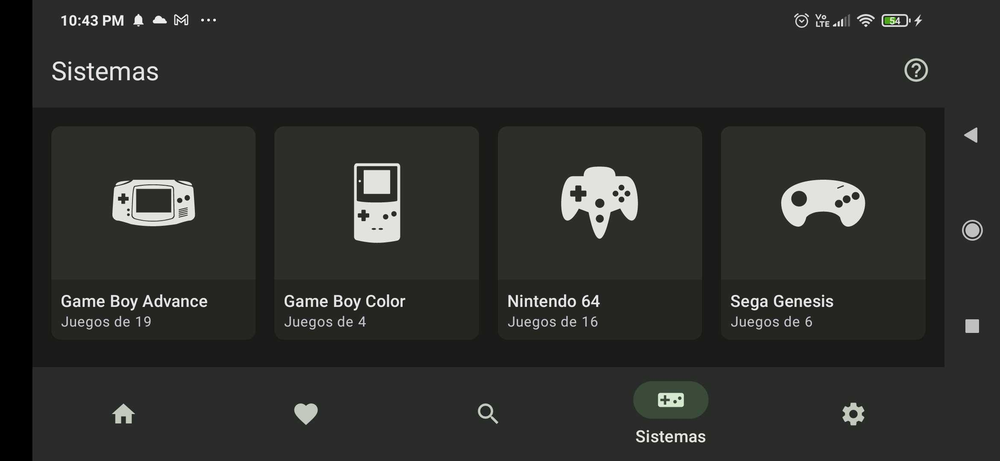
However it turned out Lemuroid has a separate repository in Crowdin
for its translation files, and what translation goes in the next
release is decided through comunity votes. I did a few translations
but I'd have to look somewhere else for my first pull request.
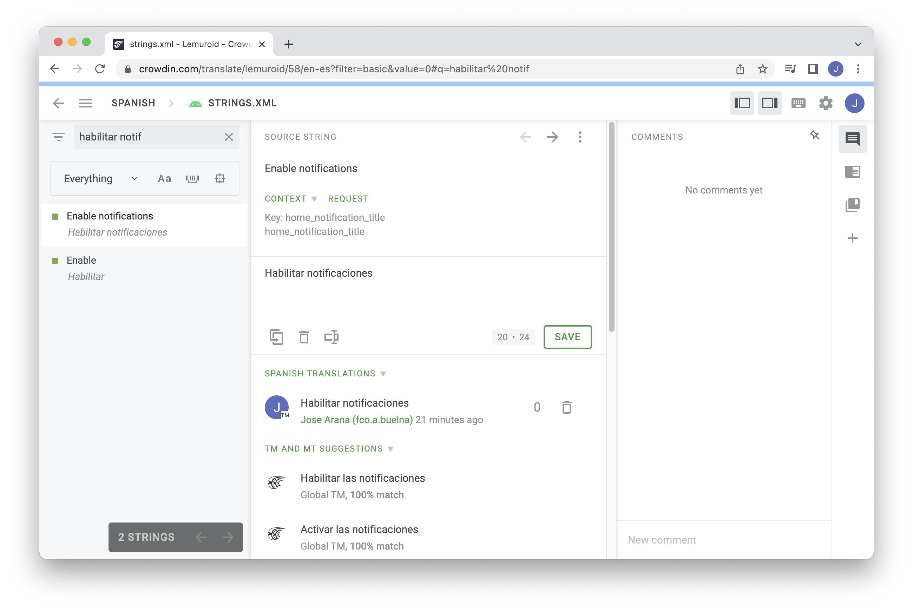
I ended up doing my very first contribution to the
"first-contributions" repo which is pretty much a hands-on tutorial to
learn how to make pull requests. From there I moved to the recomended
projects list, landing on the Google Chrome repositories.
I found an issue in the developer.chrome.com tracker and set out to
fix it, then I did the corresponding pull request. I submitted it for
approval, but I'm not sure if it'll even be considered, I followed the
guidelines to the letter but the notifications under the PR seem to
suggest that I need to be whitelisted by the maintainers in some way.
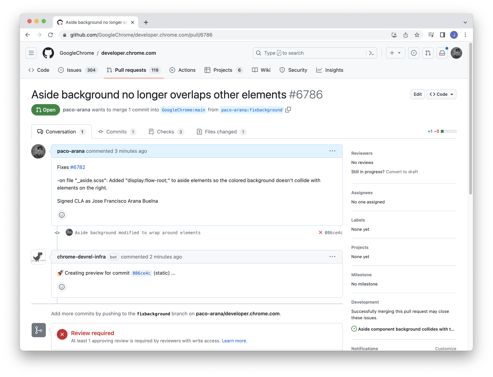
Without doing more pull requests it's hard to know since I don't have
a frame of reference. I've already started looking at other issues for
next week in order to fix that.
Overall I think the main benefit of contributing to open source
software so far has been looking at the variation in project
structure. Some of the repositories that I visited were a challenge to
navigate through. Untangling the logic of each project seems like just
as big of a challenge as the issues themselves.
Uploaded on July 3, 2023
Week 11: Lightning Talks: Part 3
(June 24 - June 30) Design Patterns Ignite Talk
I decided to do my final Lightning Talk on Design Patterns,
specifically about the origin of design patterns in architecture and
how they ended up as an integral part of computer science.
I'm an architecture grad, and I love architecture as much as I love
technology. Two of my favorite books on Architecture are "A Pattern
Language" and "The Timeless Way of Building" by Christopher Alexander.
To me those two relatively obscure books are essentially the holy
books of Architecture. My fanatism aside they were also very
influential outside of that field, being the originators of Design
Patterns, that's why I decided to do the final talk on that topic,
since this was a perfect chance to talk about something I like.

I found the ignite format pretty challenging, 5 minutes of 15 second
slides comes to a total of 20 slides. Since I'm used to doing one
slide for each minute of presentation it felt like a lot of slides to
fill. Once I got into rhythm I understood the advantages of the format
though, I likened it to some guides for making videos for social
media, where even 15 seconds without changing the content on the
screen can feel like a long time.
It lends itself better for humour as well, since if a joke on a slide
falls flat the public is only looking at it for an instant before
moving to something else.
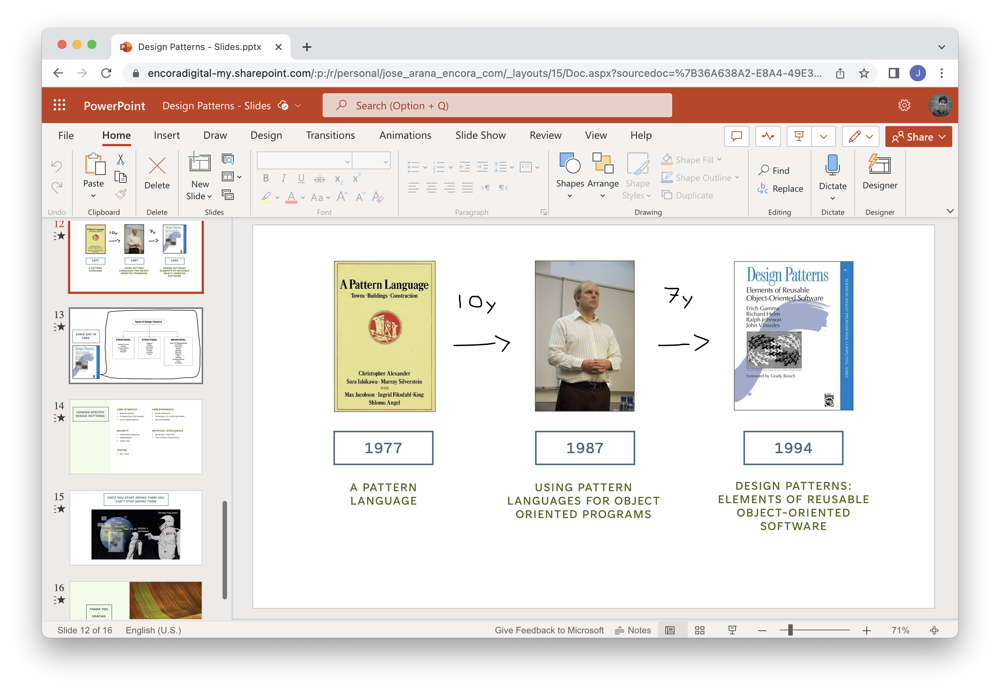
In the end though I couldn't get all 20 slides, I settled for 15
slides with a duration of 20 seconds each (not including title and end
slides) which seemed pretty close to the goal.
I first tried to get someone on board to do our talk on tuesday 27
since on wednesday I would leave on a trip to Aguascalientes. Since it
was still too early I instead got together with Hugo, Adrian and Bryan
for the final talk on friday 30, the only other day I could fit into
my trip's schedule. Everything went mostly smooth during the talks, it
was a good wrap to the module.
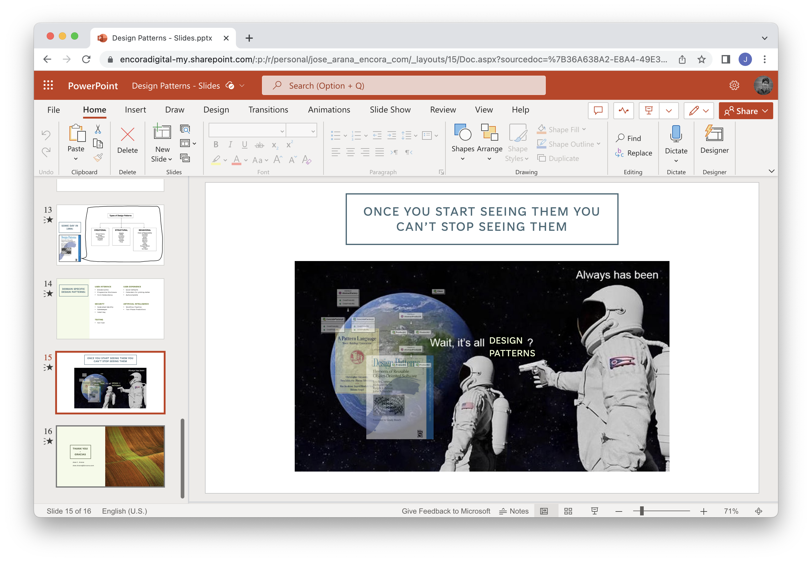
After finishing the Lightning Talks we were tasked with the Open
Source module. I've wanted to contribute with FOSS but it feels just a
bit intimidating to actually do it. I think it will be a fun
challenge.
Uploaded on July 3, 2023
Week 10: Hyperskill Part 3
(June 19 - June 24) Cinema Room REST Service
Hyperskill
Previously I had said that after the Music Advisor I'd go for the
Account Service project, however I quickly changed my mind after
seeing the difficulty rating and went for the
Cinema Room project instead. Despite being classified
as "hard" this project proved a lot easier than the first one due to
not having any of the roadblocks mentioned in previous entries: The
instructions were more straightforward, it was up to date and the
tests were written to reflect the actual requirements for each stage.
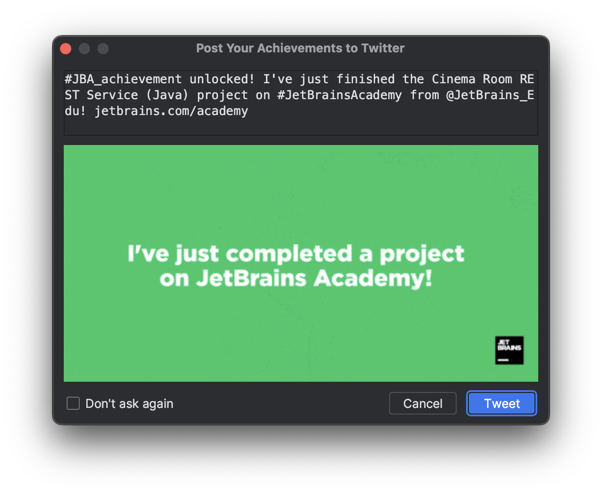
Instead of a couple weeks it took a total of five days to complete the
Cinema Room: Three days for the sixty-something lessons, working six
hours at a time give or take, and two more days for the four project
stages.
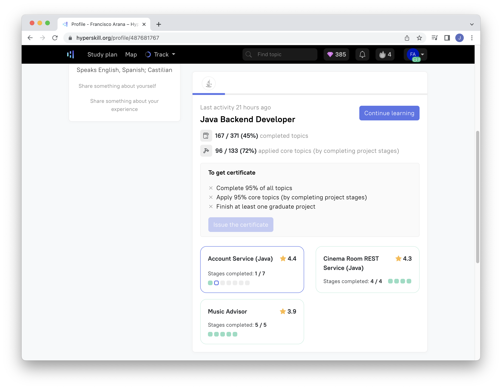
Due to being short on time I tried to jump into the Account Service
project stages right away, but got stuck in stage 2/7 which deals with
Spring Security. I went back to the lessons and now it seems like I
might be able to work through the second stage but I don't see myself
progressing through the other five stages fast enough to finish by the
27th.
Lightning Talks
I did my second lightning talk on Recursion and Recursive Functions. I
thought it would be an interesting topic with many visual examples, it
also gave me the opportunity to relax a little and code a small
program for drawing flowers as a break from the Hyperskill stuff.
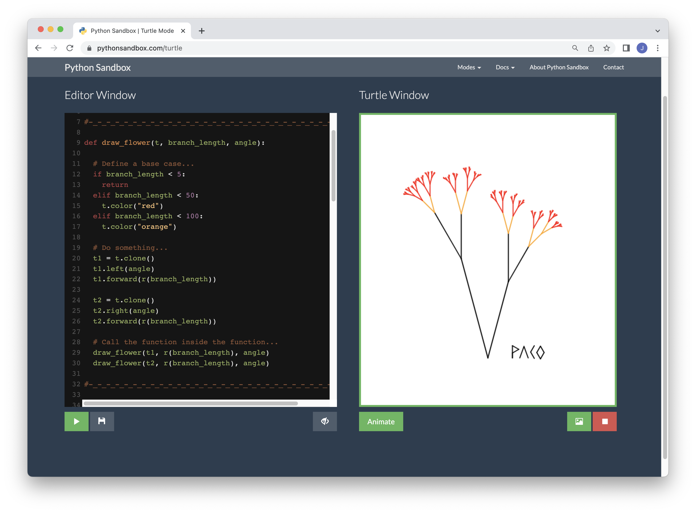
While I think there was a marked improvement from my previous talk I
still see many areas that need work for the last talk next week. Not
only individually but also as teams the organization for the LTs has
been too loose and that's something we should improve for the closing
session, I'd like to create an introductory slide with our names and
topics so that guests have something to see while they wait for the
LTs to start.
I'm yet to decide on the topic for my last LT, however I really liked
the angle Karen gave to her talk about data driven choices in F1.
Tying the topic to one area of application made it that much easier to
follow, so I'd like to do something like that. I was tempted to do an
LT about coding patterns in general and how they originated
in Christopher Alexander's A Pattern Language, a book on
Urbanism and Architecture. However I'd rather focus on something that
I've picked up during the apprentice program.
Agile Month
Something I've neglected to mention in previous entries is that we're
right in the middle of Agile Month at Encora, and we've been having a
series of talks on the matter. This week we met with Oscar Hernandez
for the talk User Story Slicing, despite the name it also
explained what a user story was from the ground up, something very
useful since I'd only been introduced to the topic recently. To me it
sounds similar to "personas" used in other design fields.
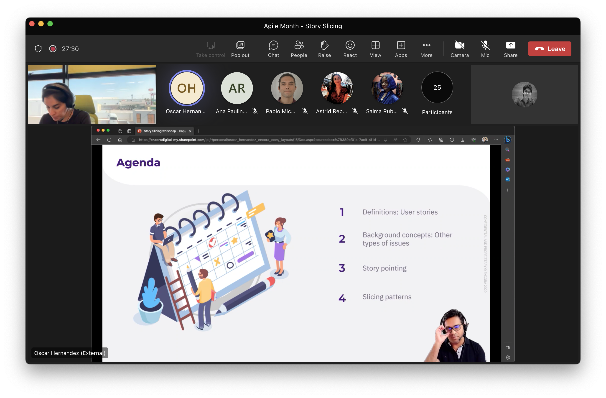
We had one more talk before the end of the week however it wasn't
related to Agile. We met with Rafael Gutierrez who had been helping us
with some Java topics to talk about Collections. It was very well
timed, since it touched on the same topics I was looking at in the
Hyperskill platform.
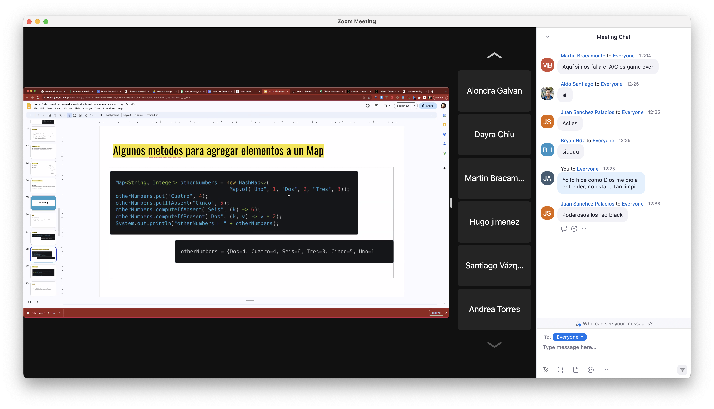
Conclusion
While I feel kinda bad about being unable to finish all three
Hyperskill projects in the time given, I see many more positives than
negatives. Before this module Java was like a huge wall that I saw no
way to climb, while now I see a clear path forward.
I'll look into what I can do to further practice the skills I've
picked up so far. Hyperskill has other projects that are supposed to
be completed in one go, I think those would be a good option if we
retain access to the platform.
Uploaded on June 25, 2023
Week 09: Hyperskill Part 2
(June 11 - June 17) Music Advisor Wrap-up
No big change of pace this week, we picked up right where we had left
off, having just finished stage 2 of the
Music Advisor. Stages 3, 4 and 5 were lighter on the
theory but much heavier on the practice. I spent a couple days stuck
at stage 3/5, just couldn't wrap my mind around how HTTP requests
worked on Java and if I'm honest never really felt I understood it
completely, I sort of pieced it through trial and error. The weird
thing is that now that I look back on it it's crystal clear what it
does, but at the time? I felt like I was writing a magic spell rather
than code:
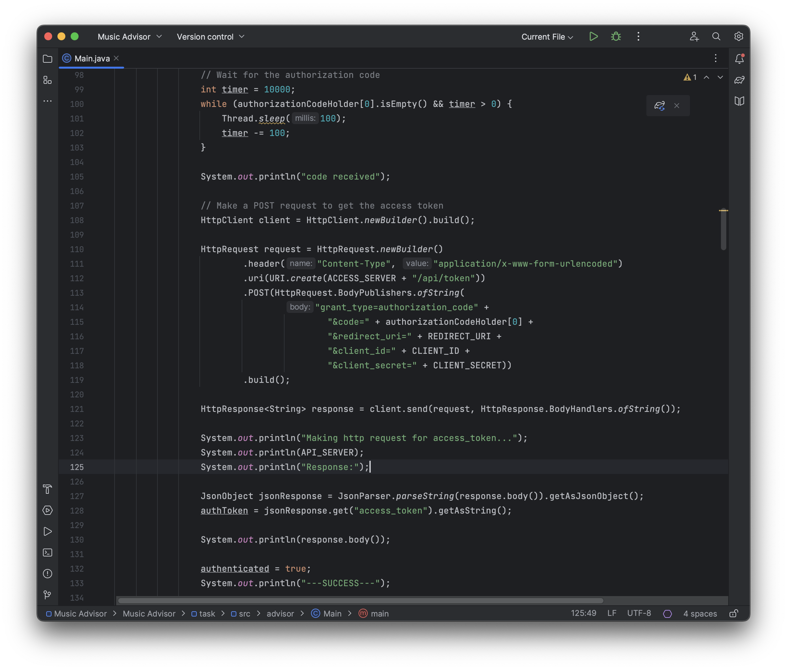
The good part is that I'd then have to do more of the same for stage
4/5, so now it's almost burnt into my memory, it should be much easier
to figure it out if i ever do forget it.
The real challenge for stage 4 was actually the tests. I spent a whole
afternoon figuring out how to work around one of the tests, as it
seemed like the logic of the test itself was internally flawed in some
way. The comments in Hyperskill's page said as much and did give some
hints. I ended up placing the whole block of code in a big try-catch
block that fed the test the answer it wanted to get.
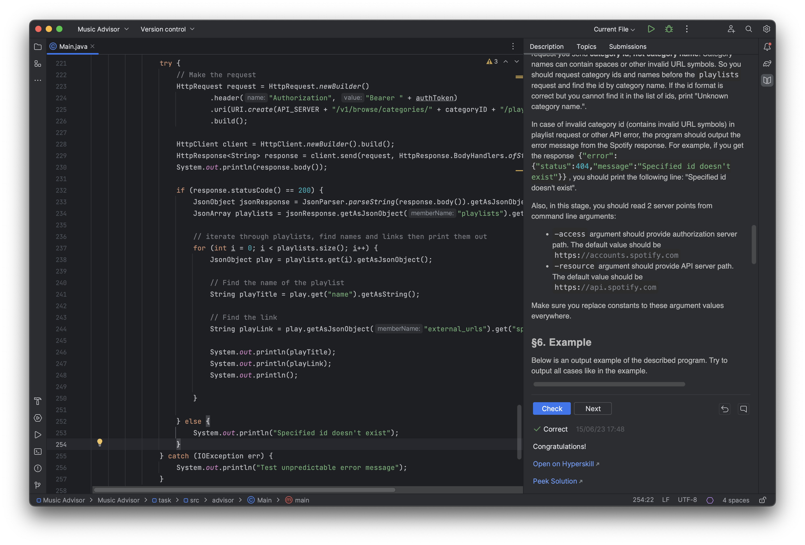
By "feeding" I mean that I had to hardcode the error messages printed
to the user, as actually reading the response error message as
specified in the instructions would fail the test.
Stage 5 was relatively easier, only really asked that we added
pagination to the project. It also suggested that we modified the
project to fit into the Model-View-Controller architecture patter, I
gave it an honest to god attempt but basically broke everything in the
process so I rolled back the changes, at that point I also felt I had
invested far too much time on the Music Advisor project and it was
time to wrap it up.
In the end it took a bit less time to complete than the couple
previous stages. The tests were complicated to get through but more
straightforward in the sense that they actually followed the behavior
specified in the instructions. When I finally got the pop-up window
telling me I had completed the project I literally stood up from my
seat:
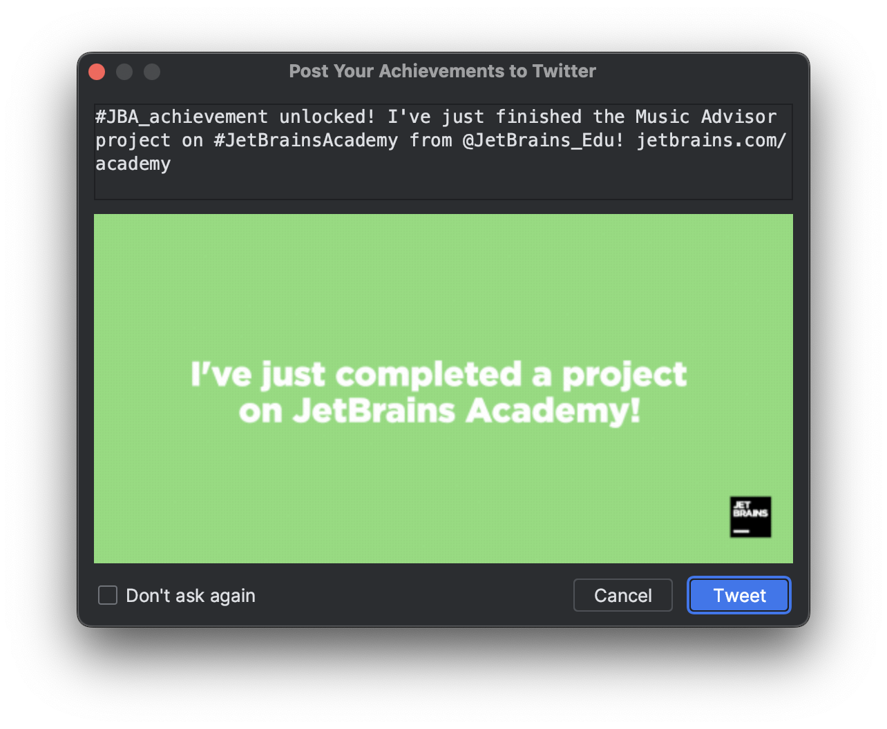
I'm happy to put the Music Advisor behind me and
start fresh, I decided on the Account Service project
to do second. It seems like a good deal of the lessons learned in the
previous project will carry over and I'm crossing my fingers hoping I
don't get stuck again, as I only have about a week and a half to get
through two more projects to meet the June 29th deadline.
Uploaded on June 17, 2023